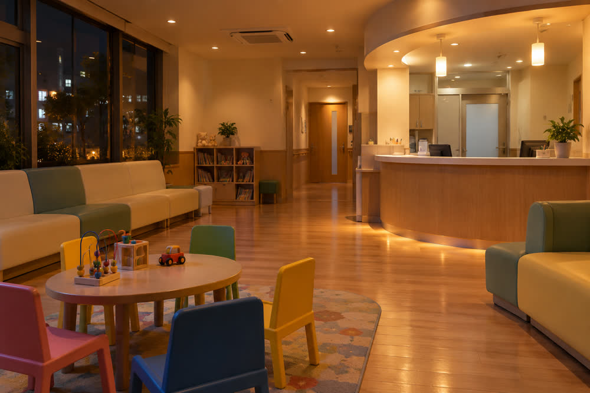

Children's emergency clinic to stay open until 23:00 from October
Springvale City Emergency Clinic will see children for an hour longer on weekdays and Saturdays, and drop its Sunday lunch break, from 1 October. Night visits by children reached a record 9,420 last year, and more than a thousand arrived after reception had closed.

Parents in Springvale will have an extra hour to take a sick child to a doctor in the evening from next month, when the city's emergency clinic extends its children's hours to 23:00 on every day of the week.
From Thursday 1 October, the children's service at the Springvale City Emergency Clinic, on the ground floor of the Springvale Health Centre building in Otemachi, will open from 19:00 to 23:00 on weekdays, instead of closing at 22:00. On Saturdays it will open from 18:00 to 23:00. On Sundays and national holidays it will run continuously from 9:00 to 23:00, ending the lunch break between 12:00 and 13:00 that parents have long complained about.
Reception will still close 30 minutes before the clinic does, at 22:30 on every day.
| Day | Until 30 September | From 1 October |
|---|---|---|
| Weekdays | 19:00–22:00 | 19:00–23:00 |
| Saturdays | 18:00–22:00 | 18:00–23:00 |
| Sundays and national holidays | 9:00–12:00 and 13:00–22:00 | 9:00–23:00 (no lunch break) |
| Reception closes | 30 minutes before closing | 30 minutes before closing |
After 23:00, call the children's medical helpline #8000 first. The duty hospital overnight is Harvest Prefectural Central Hospital. Bring the child's insurance card and medical subsidy card.
A record year
The clinic saw 9,420 children at night and at weekends in fiscal 2025, the year to March 2026, up 11% from 8,470 the year before and the highest number since it opened. The busiest hour on weekdays was between 21:00 and 22:00, which accounted for 28% of weekday visits.
Last year 1,130 children arrived after reception had closed at 21:30 and were referred to Harvest Prefectural Central Hospital, whose children's emergency department is the only one in the city open overnight. The hospital says it treated 4,860 children at night in fiscal 2025, about 70% of whom had mild illnesses that a clinic could have handled.
A child with a fever at 21:45 should not have to be driven to a hospital emergency department. Moving closing time to 23:00 covers most of the families who were being turned away.
Dr Makoto Ishii, head of the paediatric section of the Springvale Medical Association
Doctors from local clinics take turns
The clinic does not have its own paediatricians. It is staffed in rotation by 38 paediatricians from clinics around the city, who take evening and weekend shifts on top of their daytime work. The extra hour means about 360 more shifts a year, which the medical association agreed to cover after the city raised the hourly fee it pays doctors.
The extension will cost about ¥42 million a year, including nurses, pharmacists and reception staff, and was included in the fiscal 2026 budget approved in March. The clinic's hours for adults are unchanged.
Dr Ishii said the clinic expects a busy autumn. Cases of flu have been rising earlier than usual since late August, and the clinic usually sees its highest numbers from December to February.
After 23:00, call #8000 first
From 23:00 until the clinic opens again, parents who are unsure whether a child needs to see a doctor should call #8000, the children's medical helpline, which is answered by nurses and paediatricians from 18:00 to 8:00 every day. They can advise whether to wait until morning, go to hospital or call an ambulance.
The duty hospital overnight remains Harvest Prefectural Central Hospital. In an emergency, such as a child who is struggling to breathe, having a seizure or cannot be woken, call 119 immediately.
Parents welcome the change
Parents' groups had asked the city to extend the hours for several years. A petition from a network of parents' associations at nursery schools collected 3,200 signatures in 2024.
My son's fever went up after dinner and by the time we got there, reception had closed. We spent three hours at the hospital for something that needed ten minutes. An extra hour sounds small, but for us it would have changed everything.
Mother of two from Kitamachi
The clinic does not take bookings. The city asks parents to phone ahead if possible, so that staff can tell them how long they are likely to wait.